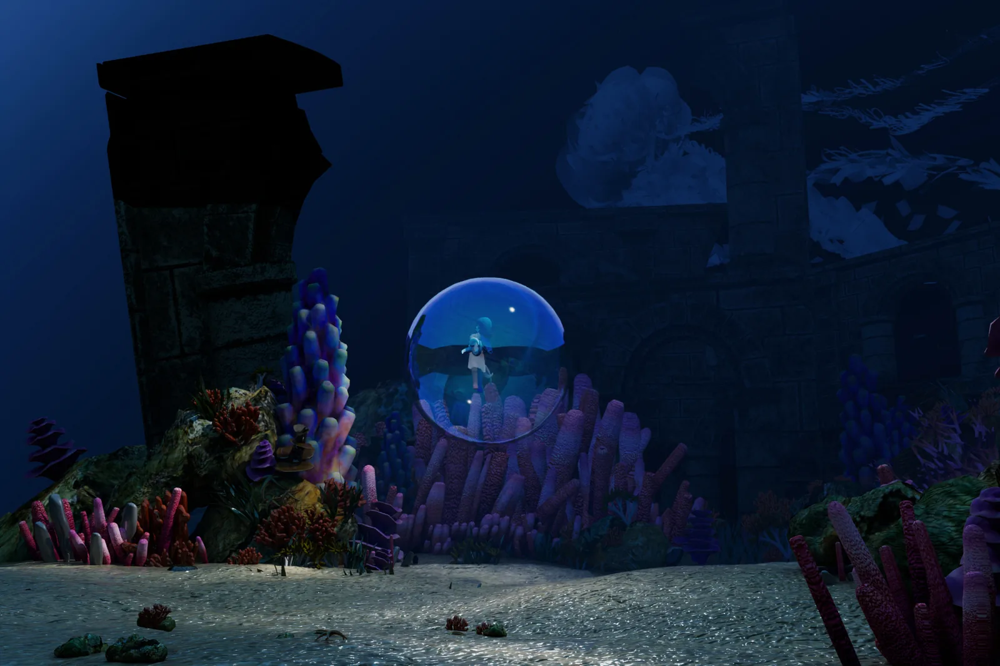
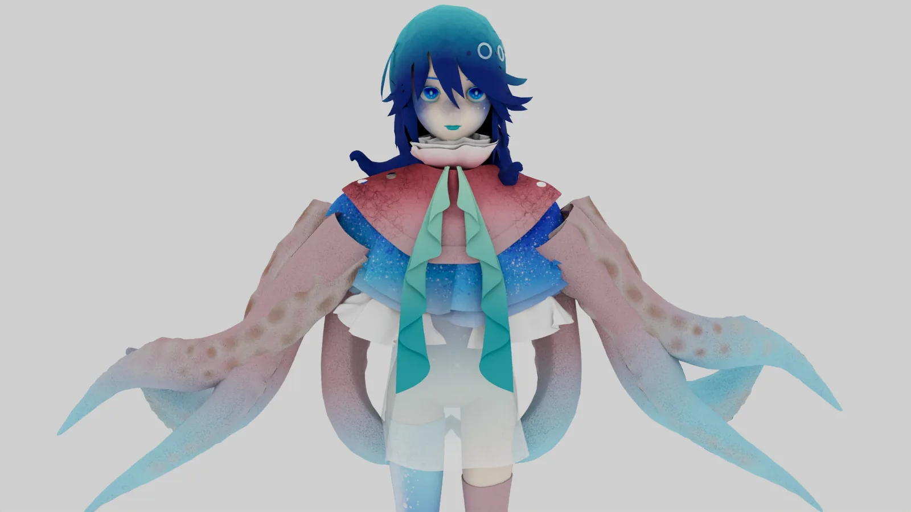
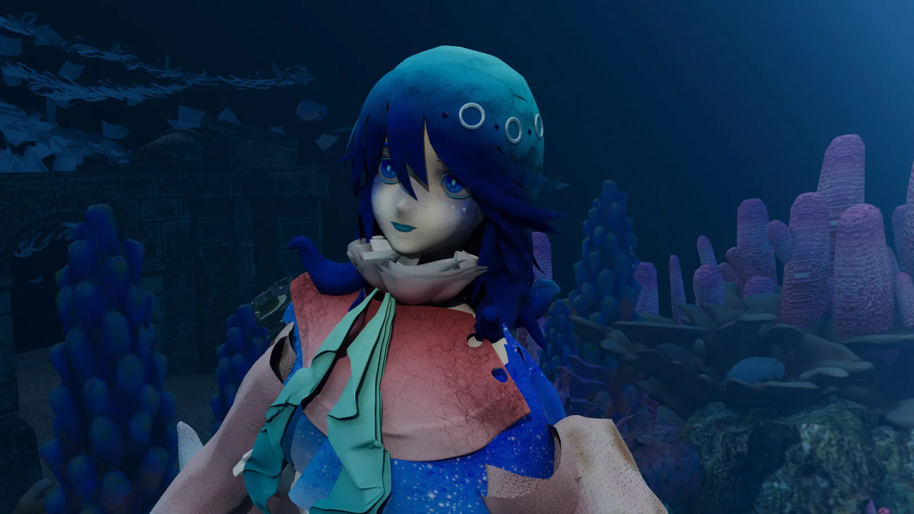
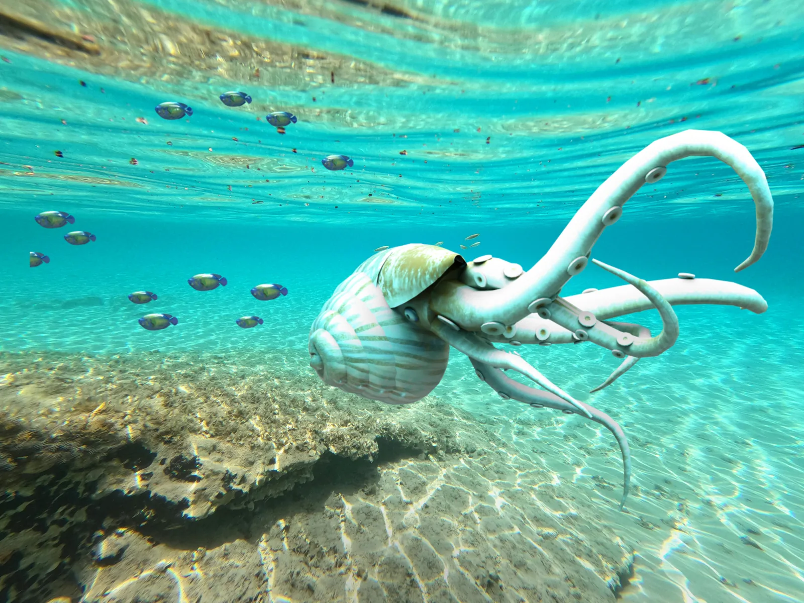
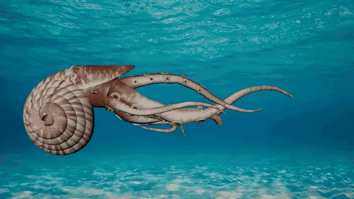
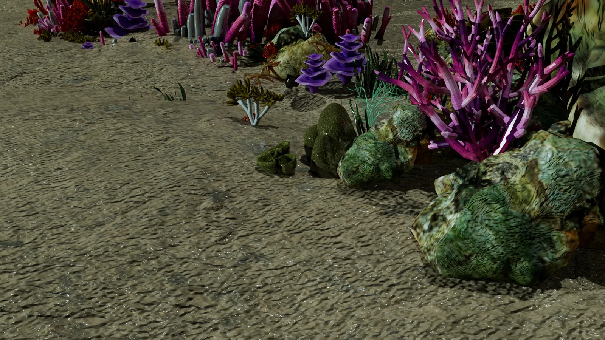
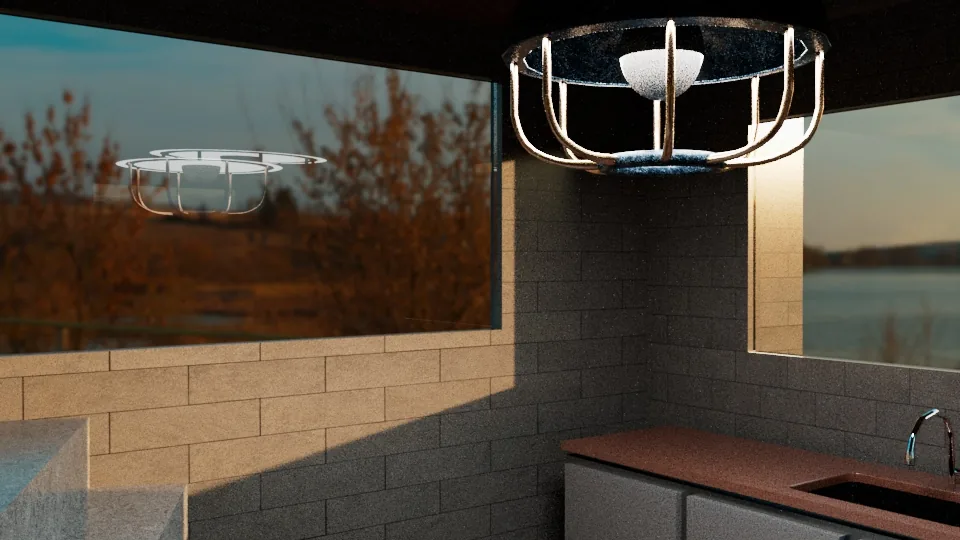
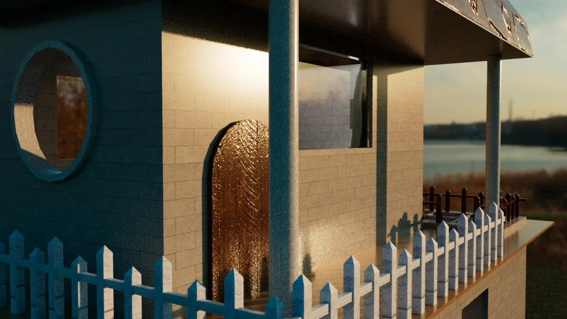
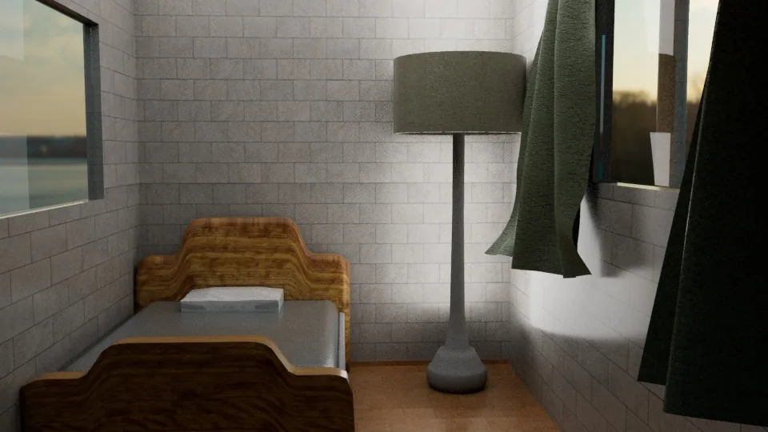

Maya 3D Projects
Computer graphics works featuring 3D modeling, rendering, and animation built in Autodesk Maya.

Aquapus: Original Character
Aquapus is an originally designed character — an agendered humanoid that lives 6000 meters undersea. All the textures are self-made in Substance 3D Painter.
More about background story
Instead of hands and feet, Aquapus has eight octopus arms and several jellyfish tentacles to support its movement. It can survive out of the water, but without feet, it cannot leave the sea. It moves quite slowly—probably takes a month to swim to the sea surface.
Aquapus is friendly, in some sense. But it sometimes wakes up to realize it ruined several ships, which bothers it a lot.


The Nautilus
This animation demonstrates the fluid movement of the nautilus-inspired design, with each head-tentacle rigged. It highlights both the exterior design details and the mechanical functionality of the model.


Undersea Scene

House Project


